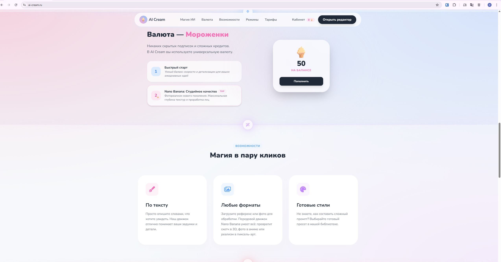
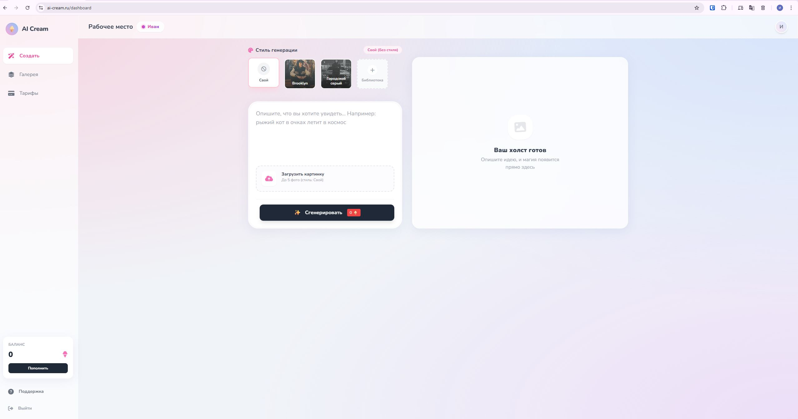
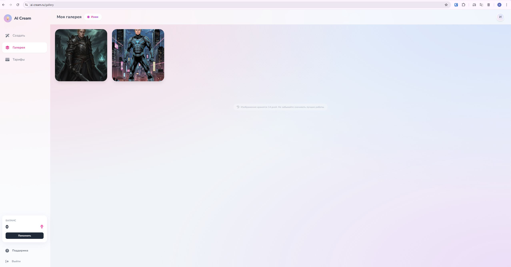
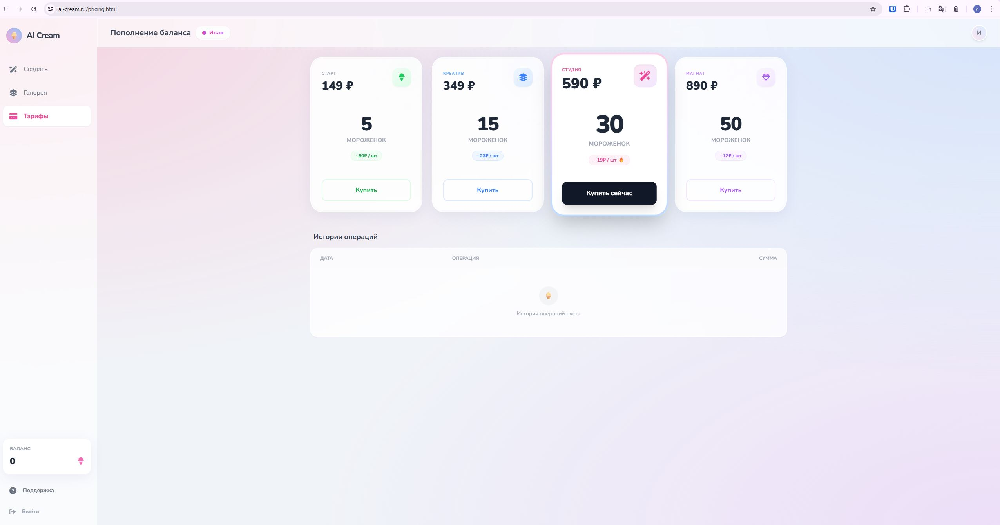

Интерфейс платформы: проектирование бесшовного пользовательского пути.
Детали проекта
- Тип: AI SaaS (B2C / Micro-business)
- Роль: Product Owner, Разработчик, Автор идеи
- Стек: Node.js, API Integration, ЮKassa
- Статус: Закрыт (MVP-тест завершен)
1. Рыночные предпосылки и Окно возможностей
Идея создания независимого веб-сервиса родилась из анализа конкурентной среды и оценки платформенных рисков.
- Анализ: Я провел анализ существующих ИИ-генераторов на рынке СНГ, разобрал их юнит-экономику и UX. Обнаружил уязвимость: 90% доступных и популярных решений существуют исключительно в формате Telegram-ботов.
- Главный триггер: В момент анализа начались новости о возможных блокировках Telegram в РФ, полная привязка бизнеса к одному мессенджеру стала критическим риском для конкурентов, поэтому появилось окно возможностей.
- Окно возможностей: Возникла гипотеза, что создание полноценного, независимого сайта позволит перехватить аудиторию конкурентов, если ТГ-боты окажутся недоступны.
2. Контекст и Фокус роста
На этапе проектирования MVP я осознал, что главным узким местом для ИИ-сервисов является Активация пользователя. Если посетитель не поймет, как получить качественное фото за первые 60 секунд, он уйдет навсегда.
Цель: Выстроить архитектуру «вау-эффекта». Мой фокус был направлен на то, чтобы довести пользователя до Aha-moment, то есть получения первой качественной картинки максимально простым путем.
3. Главная гипотеза и Реализация
«Внедрение системы визуальных пресетов помимо пустого поля ввода промпта увеличит долю активных пользователей на 30-40% за счет снижения порога входа».
- Что сделано: Спроектирована библиотека стилей, где каждый промпт был отобран вручную для гарантии результата.
- Экономика активации: Ограничил бесплатный тест одной генерацией. Вывод: если продукт не создает ценность с первого раза, увеличение бесплатных попыток лишь увеличивает убытки бизнеса.
Интерфейс и механики

Валюта «Мороженки».
Замена технических «токенов» на понятную метафору бренда. Пользователи отметили, что покупка «мороженого» звучит привлекательней и органично дополняет название сайта.

Визуальные пресеты.
Замена текстового ввода на выбор готового стиля для моментального результата.

Личная галерея.
Система хранения результатов для повышения Retention первого дня.

Монетизация.
Прямая интеграция с Robokassa для оплаты внутренней валюты.
4. Метрики и Результаты MVP-теста
27 / 30
Успешных генераций без ошибок
< 1 мин
Меньше одной минуты от отправки запроса генерации до получения картинки
Вау-эффект
Пользователи отметили притягательный дизайн и удобство готовых пресетов.
Так как это было закрытое тестирование на небольшой аудитории (30 человек), классические метрики вроде Retention D1 были нерелевантны. Фокус был смещен на качественные исследования и стабильность работы.
27 тестировщиков успешно получили готовое изображение без затыков в UX и технических сбоев. Собранная положительная обратная связь подтвердила гипотезу: визуальные пресеты действительно решают проблему «сложности первого шага» и вызывают у пользователя тот самый Aha-moment.
4. Трудности и преисполнение в ошибках
Иллюзия роста
Я осознал, что Количество регистраций — обманчивый показатель. Он не отражает ценность. 1000 юзеров, которые ничего не купили, приносят бизнесу только убытки на серверные мощности. Ключевым должно быть вовлеченность в платные функции.
Ошибка SEO-продвижения
Попытка делать ставку на классическое SEO на старте оказалась дорогой и долгой. Дистрибуция через ТГ-ботов сработала бы в разы быстрее и дешевле.
Избыток функционала
Потратил время на добавление выбора между разными ИИ-моделями. Позже понял: если первая модель не решает задачу юзера, то подключение второй модели не поможет. Нужно улучшать ценность одной фичи, а не ширину списка.
Принцип «Быстрого результата»
Главный вывод для будущих B2B проектов: клиенту нужно показать пользу на его собственных данных в первые минуты. Бесплатный аудит или демо-отчет продают лучше любой презентации.
Финальный итог
Проект ai-cream.ru успешно выполнил свою задачу как технический и продуктовый полигон. На нем были обкатаны механики активации, интеграции платежей и работа с ИИ-моделями.
На текущий момент сайт намеренно закрыт, чтобы сфокусировать все ресурсы и полученный опыт на разработке более амбициозного и сложного продукта — TrenlyFit.
{kind=link}
{kind=link}
{kind=link}
{kind=link}
{kind=link}
{kind=link}
{kind=link}